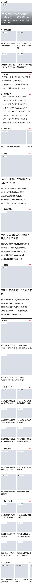

版面評估報表:首頁
第 2、3 層:JSON 估算 + 渲染量測(Chromium、Noto Sans TC、360~1440px 六種寬度)
整頁不合格:21 個項目中,不合格 6、警告 3、合格 12
改善建議
- ▲欄底對齊JSON 估算3 個對象
- F 1024px · 兩欄高差 11%(左 376px、右 334px)F 的右欄較短 11%;調整左右比例(例如 8:4 改 7:5)、調整則數,或換成不怕高度差的型
- G 1024px · 兩欄高差 11%(左 376px、右 334px)G 的右欄較短 11%;調整左右比例(例如 8:4 改 7:5)、調整則數,或換成不怕高度差的型
- H 1280px · 兩欄高差 21%(左 387px、右 307px)H 的右欄較短 21%;調整左右比例(例如 8:4 改 7:5)、調整則數,或換成不怕高度差的型
- F 1024px · 兩欄高差 11%(左 376px、右 334px)
- ▲欄高JSON 估算2 個對象
- section sections 1024px · 2783px / 1556px,差 44%section sections 的左欄(F、G、H、I、J)比另一欄高 44%;把較高那欄的一塊移到另一欄,或在較矮的欄加一塊
- section top 1024px · 965px / 839px,差 13%section top 的左欄(A、B)比另一欄高 13%;把較高那欄的一塊移到另一欄,或在較矮的欄加一塊
- section sections 1024px · 2783px / 1556px,差 44%
- ▲末列不落單JSON 估算1 個對象
- B 768px · 4 則 ÷ 3 欄,餘 1B 在 768px 為 3 欄、4 則;則數改成 3 的倍數,或調整這類裝置的欄數
- B 768px · 4 則 ÷ 3 欄,餘 1
- ▲同型不連續JSON 估算1 個對象
- F、G、H · F、G、H 連續 3 塊都是 P09F、G、H 連續使用 P09;把中間那塊換成同分組(news-combo)的其他型,或和其他區塊交錯排列
- F、G、H · F、G、H 連續 3 塊都是 P09
- ▲標題行數JSON 估算2 個對象
- A(疊字) 360px · 疊字標題 3 行A 的疊字標題在 360px 估 3 行,超過上限 2 行;標題縮到約 22 字以內,或手機改用 P02 大圖下文
- B 1280px · 最多 3 行B 在 1280px 有標題 3 行;限制字數、加寬欄或降低文字量
- A(疊字) 360px · 疊字標題 3 行
- ▲觸控目標渲染量測11 個對象
- C 360px · 最小觸控目標 37px(「更多 ›」)C 的「更多 ›」只有 37px;觸控目標至少 44×44px(例如區塊標題列加高到 44px,或連結加內距)
- D 360px · 最小觸控目標 37px(「更多 ›」)D 的「更多 ›」只有 37px;觸控目標至少 44×44px(例如區塊標題列加高到 44px,或連結加內距)
- E 360px · 最小觸控目標 37px(「更多 ›」)E 的「更多 ›」只有 37px;觸控目標至少 44×44px(例如區塊標題列加高到 44px,或連結加內距)
- F 360px · 最小觸控目標 37px(「更多 ›」)F 的「更多 ›」只有 37px;觸控目標至少 44×44px(例如區塊標題列加高到 44px,或連結加內距)
- G 360px · 最小觸控目標 37px(「更多 ›」)G 的「更多 ›」只有 37px;觸控目標至少 44×44px(例如區塊標題列加高到 44px,或連結加內距)
- H 360px · 最小觸控目標 37px(「更多 ›」)H 的「更多 ›」只有 37px;觸控目標至少 44×44px(例如區塊標題列加高到 44px,或連結加內距)
- I 360px · 最小觸控目標 37px(「更多 ›」)I 的「更多 ›」只有 37px;觸控目標至少 44×44px(例如區塊標題列加高到 44px,或連結加內距)
- J 360px · 最小觸控目標 37px(「更多 ›」)J 的「更多 ›」只有 37px;觸控目標至少 44×44px(例如區塊標題列加高到 44px,或連結加內距)
- K 360px · 最小觸控目標 37px(「更多 ›」)K 的「更多 ›」只有 37px;觸控目標至少 44×44px(例如區塊標題列加高到 44px,或連結加內距)
- L 360px · 最小觸控目標 37px(「更多 ›」)L 的「更多 ›」只有 37px;觸控目標至少 44×44px(例如區塊標題列加高到 44px,或連結加內距)
- M 360px · 最小觸控目標 37px(「更多 ›」)M 的「更多 ›」只有 37px;觸控目標至少 44×44px(例如區塊標題列加高到 44px,或連結加內距)
- C 360px · 最小觸控目標 37px(「更多 ›」)
- ■填充率JSON 估算1 個對象
- I 1024px · 文字區 ÷ 圖高 = 48%I 的文字只佔圖高 48%(右邊太空);加長摘要、加 META 或相關連結,或把左右比例改成 6:6
- I 1024px · 文字區 ÷ 圖高 = 48%
- ■輪播填滿JSON 估算POC1 個對象
- M 1024px · 4 則,一次顯示 6 張M 只有 4 則,少於 1024px 一次顯示的 6 張;增加則數,或減少一次顯示的張數
- M 1024px · 4 則,一次顯示 6 張
- ■放大型不相鄰JSON 估算1 個對象
- F、G;G、H;H、I · 相鄰的放大型 3 組相鄰的放大型會搶重點;把其中一塊換成不放大的型(例如 P07、P03)
- F、G;G、H;H、I · 相鄰的放大型 3 組
比例 100
沒有要改的地方。
合格 1 項
- ●圖片比例渲染量測A、B、E、F、G、H、I、J、K、L、M
對齊 40
- ▲欄底對齊JSON 估算3 個對象
- F 1024px · 兩欄高差 11%(左 376px、右 334px)F 的右欄較短 11%;調整左右比例(例如 8:4 改 7:5)、調整則數,或換成不怕高度差的型
- G 1024px · 兩欄高差 11%(左 376px、右 334px)G 的右欄較短 11%;調整左右比例(例如 8:4 改 7:5)、調整則數,或換成不怕高度差的型
- H 1280px · 兩欄高差 21%(左 387px、右 307px)H 的右欄較短 21%;調整左右比例(例如 8:4 改 7:5)、調整則數,或換成不怕高度差的型
- F 1024px · 兩欄高差 11%(左 376px、右 334px)
- ▲欄高JSON 估算2 個對象
- section sections 1024px · 2783px / 1556px,差 44%section sections 的左欄(F、G、H、I、J)比另一欄高 44%;把較高那欄的一塊移到另一欄,或在較矮的欄加一塊
- section top 1024px · 965px / 839px,差 13%section top 的左欄(A、B)比另一欄高 13%;把較高那欄的一塊移到另一欄,或在較矮的欄加一塊
- section sections 1024px · 2783px / 1556px,差 44%
合格 2 項
- ●同列對齊渲染量測B、E、J、K、L、M
- ●欄寬照格線渲染量測F、G、H、I、section sections、section top
完整 70
- ▲末列不落單JSON 估算1 個對象
- B 768px · 4 則 ÷ 3 欄,餘 1B 在 768px 為 3 欄、4 則;則數改成 3 的倍數,或調整這類裝置的欄數
- B 768px · 4 則 ÷ 3 欄,餘 1
密度 80
- ■填充率JSON 估算1 個對象
- I 1024px · 文字區 ÷ 圖高 = 48%I 的文字只佔圖高 48%(右邊太空);加長摘要、加 META 或相關連結,或把左右比例改成 6:6
- I 1024px · 文字區 ÷ 圖高 = 48%
- ■輪播填滿JSON 估算POC1 個對象
- M 1024px · 4 則,一次顯示 6 張M 只有 4 則,少於 1024px 一次顯示的 6 張;增加則數,或減少一次顯示的張數
- M 1024px · 4 則,一次顯示 6 張
合格 4 項
- ●用途則數JSON 估算A、B、C、D、E、F、G、H、I、J、K、L、M
- ●區塊長度JSON 估算A、B、C、D、E、F、G、H、I、J、K、L、M
- ●區塊數JSON 估算整頁
- ●整頁則數JSON 估算整頁
節奏 70
- ▲同型不連續JSON 估算1 個對象
- F、G、H · F、G、H 連續 3 塊都是 P09F、G、H 連續使用 P09;把中間那塊換成同分組(news-combo)的其他型,或和其他區塊交錯排列
- F、G、H · F、G、H 連續 3 塊都是 P09
合格 2 項
- ●列距JSON 估算B、E、J、K、L、M
- ●間距節奏JSON 估算整頁
層級 90
- ■放大型不相鄰JSON 估算1 個對象
- F、G;G、H;H、I · 相鄰的放大型 3 組相鄰的放大型會搶重點;把其中一塊換成不放大的型(例如 P07、P03)
- F、G;G、H;H、I · 相鄰的放大型 3 組
合格 2 項
- ●手機首屏JSON 估算A
- ●單塊不重複JSON 估算flash、headline、popular
文字 70
- ▲標題行數JSON 估算2 個對象
- A(疊字) 360px · 疊字標題 3 行A 的疊字標題在 360px 估 3 行,超過上限 2 行;標題縮到約 22 字以內,或手機改用 P02 大圖下文
- B 1280px · 最多 3 行B 在 1280px 有標題 3 行;限制字數、加寬欄或降低文字量
- A(疊字) 360px · 疊字標題 3 行
可用性 70
- ▲觸控目標渲染量測11 個對象
- C 360px · 最小觸控目標 37px(「更多 ›」)C 的「更多 ›」只有 37px;觸控目標至少 44×44px(例如區塊標題列加高到 44px,或連結加內距)
- D 360px · 最小觸控目標 37px(「更多 ›」)D 的「更多 ›」只有 37px;觸控目標至少 44×44px(例如區塊標題列加高到 44px,或連結加內距)
- E 360px · 最小觸控目標 37px(「更多 ›」)E 的「更多 ›」只有 37px;觸控目標至少 44×44px(例如區塊標題列加高到 44px,或連結加內距)
- F 360px · 最小觸控目標 37px(「更多 ›」)F 的「更多 ›」只有 37px;觸控目標至少 44×44px(例如區塊標題列加高到 44px,或連結加內距)
- G 360px · 最小觸控目標 37px(「更多 ›」)G 的「更多 ›」只有 37px;觸控目標至少 44×44px(例如區塊標題列加高到 44px,或連結加內距)
- H 360px · 最小觸控目標 37px(「更多 ›」)H 的「更多 ›」只有 37px;觸控目標至少 44×44px(例如區塊標題列加高到 44px,或連結加內距)
- I 360px · 最小觸控目標 37px(「更多 ›」)I 的「更多 ›」只有 37px;觸控目標至少 44×44px(例如區塊標題列加高到 44px,或連結加內距)
- J 360px · 最小觸控目標 37px(「更多 ›」)J 的「更多 ›」只有 37px;觸控目標至少 44×44px(例如區塊標題列加高到 44px,或連結加內距)
- K 360px · 最小觸控目標 37px(「更多 ›」)K 的「更多 ›」只有 37px;觸控目標至少 44×44px(例如區塊標題列加高到 44px,或連結加內距)
- L 360px · 最小觸控目標 37px(「更多 ›」)L 的「更多 ›」只有 37px;觸控目標至少 44×44px(例如區塊標題列加高到 44px,或連結加內距)
- M 360px · 最小觸控目標 37px(「更多 ›」)M 的「更多 ›」只有 37px;觸控目標至少 44×44px(例如區塊標題列加高到 44px,或連結加內距)
- C 360px · 最小觸控目標 37px(「更多 ›」)
合格 1 項
- ●水平捲動渲染量測整頁
截圖


計分:每個面向 100 分起算,每個項目只扣一次(取最差的對象),不合格扣 30、警告扣 10;總分是 8 個面向的平均。權重為經驗值。